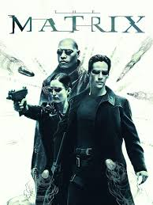
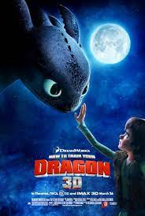

My favorite movies
Number 1. Spiderman-Into the Spiderverse

Very basic but i feel like i relate to it the most
and enjoy the structure and basically everything.
The animation was top notch and that
2. The Matrix

Amazing screenplay and fantastic science fiction
How to train your dragon
I really enjoy the story behind the three movies as well as
the whole animation and every detail they've put into it from
how they make the fire so real and how dragons are like cute pets